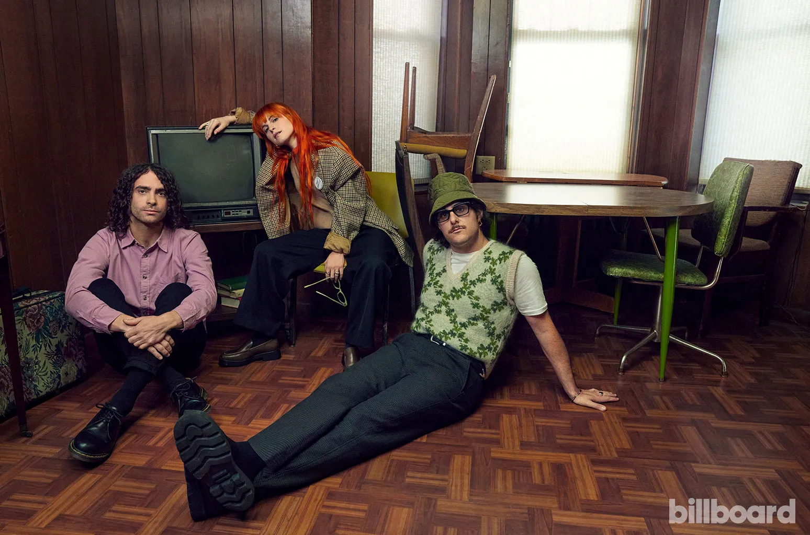
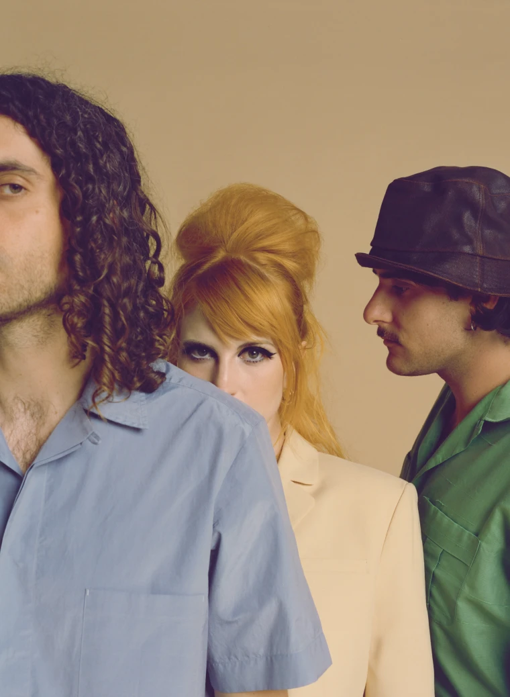
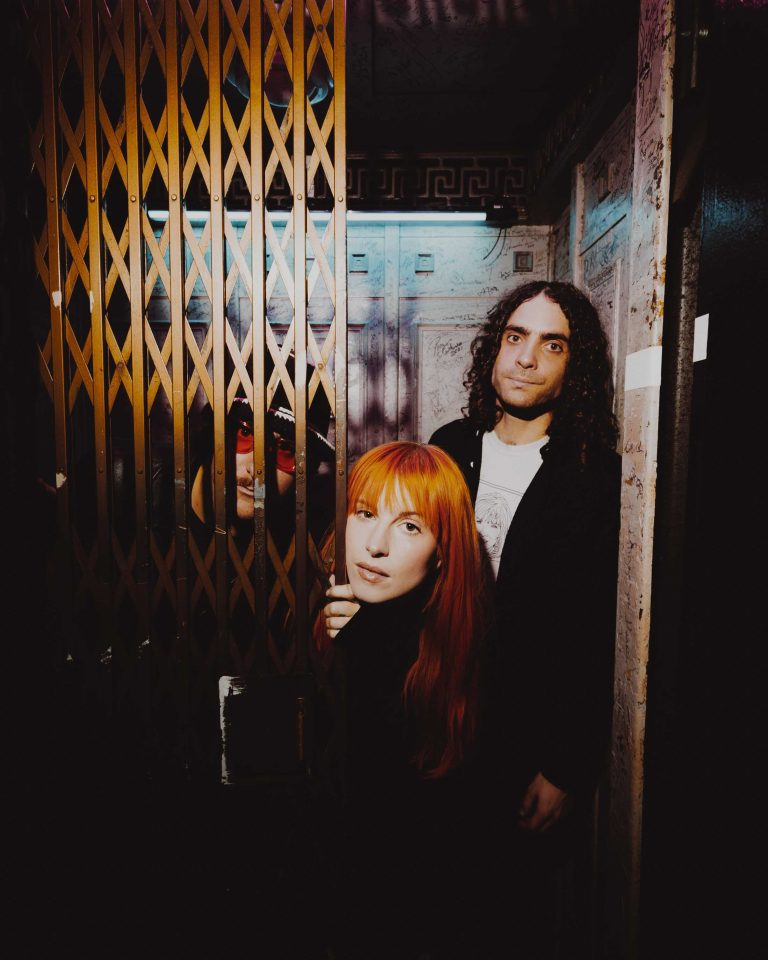
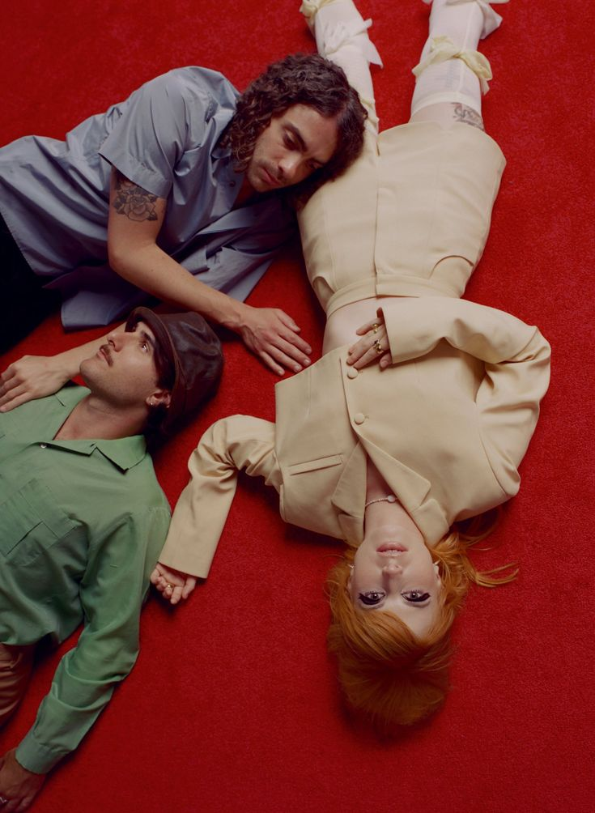
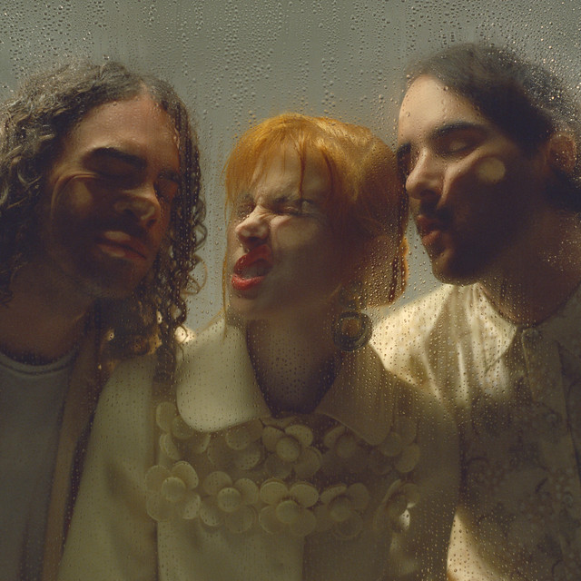

PARAMORE
Καλώς ήρθατε στην ιστοσελίδα για το συγκρότημα Paramore, έναν χώρο αφιερωμένο στη μουσική, τη δημιουργικότητα και το πάθος για την τέχνη.
Εδώ θα ανακαλύψετε την πορεία του συγκροτήματος και θα εξερευνήσετε τις μουσικές του επιτυχίες. Ευχαριστούμε που είστε εδώ. Καλή περιήγηση!
Welcome to this website about Paramore, a place dedicated to music, creativity and a passion for art.
Here you can follow the band's story and explore its music. Thanks for visiting, and enjoy!

ΒιογραφίαBiography
Οι Paramore είναι αμερικανικό ροκ συγκρότημα από το Franklin του Tennessee. Έγιναν ευρύτερα γνωστοί το 2008, όταν το τραγούδι τους «Decode» ακούστηκε στην ταινία «Twilight».
Η δημιουργία του συγκροτήματος
Το συγκρότημα δημιουργήθηκε το 2004 από την τραγουδίστρια Hayley Williams, τον κιθαρίστα Josh Farro, τον ντράμερ Zac Farro και τον μπασίστα Jeremy Davis. Τα πρώτα χρόνια έπαιζε μαζί τους και ο κιθαρίστας Jason Bynum, ενώ ο Taylor York μπήκε επίσημα στο συγκρότημα το 2007. Όλα τα μέλη ήταν τότε έφηβοι.
Η Hayley Williams είχε υπογράψει συμβόλαιο με την Atlantic Records ως σόλο καλλιτέχνιδα το 2003. Η ίδια όμως ήθελε να παίζει εναλλακτικό ροκ μαζί με ένα συγκρότημα, και η εταιρεία τελικά το δέχτηκε. Τα περισσότερα άλμπουμ των Paramore κυκλοφόρησαν από τη Fueled by Ramen.
Αλλαγές και εξέλιξη
Η ιστορία των Paramore έχει πολλές αλλαγές στη σύνθεση. Τα αδέρφια Farro αποχώρησαν το 2010 και ο Jeremy Davis το 2015, ενώ ο Zac Farro επέστρεψε το 2017. Σήμερα το συγκρότημα αποτελείται από την Hayley Williams, τον Taylor York και τον Zac Farro.
Το όνομα «Paramore» προήλθε από το πατρικό επώνυμο της μητέρας ενός από τους πρώτους μπασίστες τους. Αργότερα έμαθαν ότι η λέξη «paramour» σημαίνει «κρυφός εραστής».
Paramore is an American rock band from Franklin, Tennessee. The band reached a much wider audience in 2008, when their song "Decode" was featured in the film "Twilight".
How the band started
The band was formed in 2004 by singer Hayley Williams, guitarist Josh Farro, drummer Zac Farro and bassist Jeremy Davis. Guitarist Jason Bynum played with them in the early years, and Taylor York officially joined in 2007. All of the members were teenagers at the time.
Hayley Williams had signed with Atlantic Records as a solo artist in 2003. She wanted to play alternative rock in a band instead, and the label agreed. Most of Paramore's albums were released through Fueled by Ramen.
Changes over the years
Paramore's line-up has changed many times. The Farro brothers left in 2010 and Jeremy Davis in 2015, while Zac Farro returned in 2017. Today the band is Hayley Williams, Taylor York and Zac Farro.
The name "Paramore" came from the maiden name of the mother of one of their first bass players. The band later learned that the word "paramour" means "secret lover".
ΔισκογραφίαDiscography
Στούντιο άλμπουμStudio albums
- All We Know Is Falling (2005)
- Riot! (2007)
- Brand New Eyes (2009)
- Paramore (2013)
- After Laughter (2017)
- This Is Why (2023)
Ζωντανές ηχογραφήσειςLive albums
- Live in the UK 2008 (2008)
- The Final Riot! (2008)
Singles
- Pressure (2005)
- Emergency (2005)
- All We Know (2006)
- Misery Business (2007)
- Hallelujah (2007)
- Crushcrushcrush (2007)
- That's What You Get (2008)
- Decode (2008)
- Ignorance (2009)
- Brick by Boring Brick (2009)
- The Only Exception (2010)
- Careful (2010)
- Playing God (2010)
- Monster (2011)
- Now (2013)
- Still Into You (2013)
- Ain't It Fun (2014)
- Hard Times (2017)
Singles Club (2011)
- Renegade
- Hello Cold World
- In the Mourning
ΦωτογραφίεςPhotos




ΣύνδεσμοιLinks
Επίσημα κανάλια και άλμπουμ των Paramore.Paramore's official channels and albums.
Social media
Άλμπουμ στο YouTubeAlbums on YouTube
Διαχείριση περιεχομένουContent management
Συνδεθείτε ως διαχειριστής για να μπείτε στη σελίδα διαχείρισης.Sign in as an administrator to open the admin page.
Συνδεθήκατε ωςSigned in as .
Η σύνδεση λήγει αυτόματα σε 2 ώρες.Your session ends automatically after 2 hours.